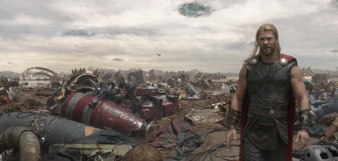
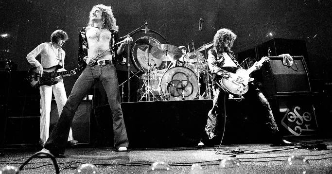
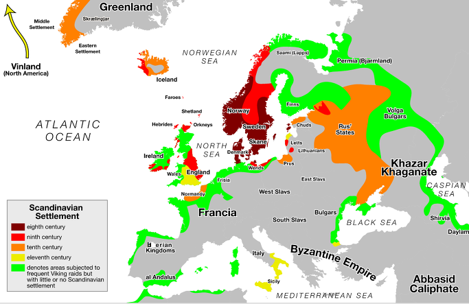
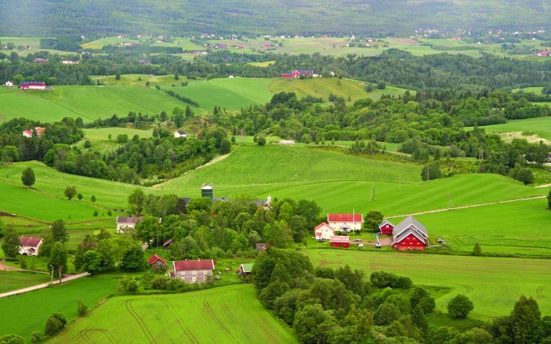
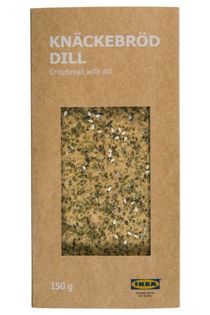
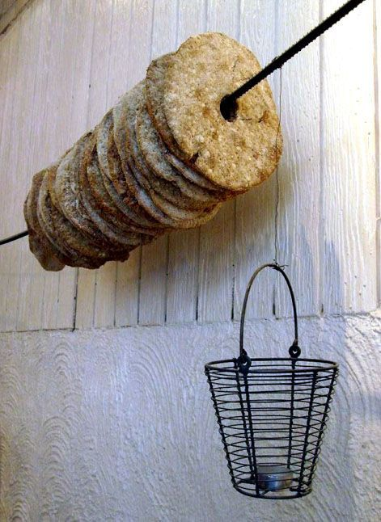
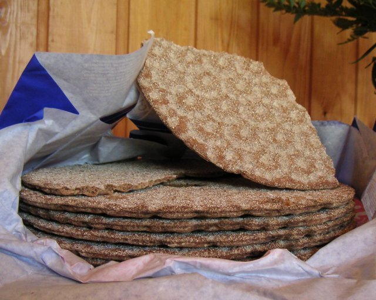

토르 라그나로크 - 바이킹들의 빵
게시: 2017-07-09T22:54:09+09:00
몇 달 전에 토르 3, 라그나로크(Thor Ragnarok)의 티저 영상이 유튜브에 공개되었습니다.


무척 재미있어 보이는 이 티저 영상의 배경 음악은 1970년대의 헤비메탈 그룹인 레드 제펠린(Led Zeppelin)의 히트곡인 '이민자의 노래'(Immigrant Song)입니다. 이민자라고 하니까 뭔가 애달프고 핍박받는다는 선입견을 가지게 되는데, 요즘 구미 선진국에서나 우리나라에서나 이민자는 별로 환영받지 못하는 존재이기 때문일 것입니다. 이 멋진 노래가 묘사하는 이민자 역시 전혀 환영받지 못하는 존재였습니다. 바로 바이킹에 대한 노래이거든요. 저 토르 3 티저 영상을 만든 프로듀서가 정말 기가 막히게 영화와 잘 어울리는 음악을 찾아낸 것이지요.
Ah-ah, ah!
Ah-ah, ah!
We come from the land of the ice and snow
우린 얼음과 눈의 땅에서 왔다네
From the midnight sun, where the hot springs flow
한밤에도 해가 떠있고 뜨거운 샘물이 흐르는 땅이지
The hammer of the gods
신들의 망치가
Will drive our ships to new lands
우리의 배를 새로운 땅으로 밀어내
To fight the horde, and sing and cry
적의 대군과 싸우고 이렇게 노래하며 외치게 만들지
Valhalla, I am coming!
발할라여, 내가 간다 !
On we sweep with threshing oar
우리는 힘차게 노를 젔네
Our only goal will be the western shore
유일한 목적지는 서쪽의 해안 뿐 !
Ah-ah, ah!
Ah-ah, ah!
We come from the land of the ice and snow
우린 얼음과 눈의 땅에서 왔다네
From the midnight sun, where the hot springs flow
한밤에도 해가 떠있고 뜨거운 샘물이 흐르는 땅이지
How soft your fields so green
너희의 초록빛 평야는 정말 부드럽구나
Can whisper tales of gore
선혈이 낭자한 이야기를 속삭여주마
Of how we calmed the tides of war
우리가 어떻게 전쟁의 물결을 잠재웠는지 말이야
We are your overlords
우리가 너희의 주인이다
On we sweep with threshing oar
우리는 힘차게 노를 젔네
Our only goal will be the western shore
유일한 목적지는 서쪽의 해안 뿐 !
So now you'd better stop and rebuild all your ruins
그러니 너희는 이제 저항을 멈추고 너희의 폐허를 다시 짓는게 낫노라
For peace and trust can win the day despite of all your losing
너희의 멸망에도 불구하고 평화와 신의가 세상을 지배할테니
Ooh-ooh, ooh-ooh, ooh-ooh
Ooh-ooh, ooh-ooh, ooh-ooh

(레드 제펠린. 70년대 이런 음악을 듣던 사람들이 지금의 60~70대 노인이 되었습니다.)
인상적인 이 노래 가사 중 특히 눈에 띄는 부분은 'How soft your fields so green'이라는 부분입니다. 이 가사에서도 암시되듯이, 아마도 덴마크와 스웨덴, 노르웨이에 살던 바이킹들이 굳이 거친 바다와 험한 싸움을 무릅쓰고 다른 나라를 침략한 이유 중 하나는 자기네들 땅이 그다지 살기 좋지 않았기 때문 아닐까 합니다. 8세기 말엽부터 약 300년 동안 맹위를 떨치던 바이킹의 침략 활동의 원인에 대해서는 여러가지 설이 있는데, 당시 스칸디나비아 내부의 권력 투쟁에서 밀려난 세력이 침략 행위를 주도했다고도 하고, 토지가 척박하여 팽창하는 인구를 먹여 살릴 수가 없었기 때문이라는 설도 있습니다. 현대의 연구에 따르면 해외 침탈로 인해 스칸디나비아 지역의 경제에 여유가 생기자 그로 인해 인구가 늘어난 것이지, 인구가 늘어나서 침략이 시작된 것은 아니라고 하네요. 재미있는 설 중 하나는 바이킹이 해외 침략에 적극적으로 나선 것이나 영국이 일찍부터 해외 식민지를 개척한 것이 모두 장자 상속제(primogeniture)와 상관이 있다는 것입니다. 맏아들이 모든 것을 다 상속받고 차남이나 삼남에게는 아무 것도 없었기 때문에, 뭐라도 해야 했던 차남 삼남들이 목숨을 걸고 해외로 강도질을 나섰다는 것이지요. 미국 역사가 슬로안(Sloan)은 프랑스가 해외 식민지 개척에 소극적이었던 이유가 프랑스는 장자 상속제가 아니었기 때문이라고 말하기도 했습니다. 바이킹의 침략 행위의 원인이 무엇이든 간에 확실한 것은, 프랑스 노르망디에서도 그랬고 지중해의 시칠리아 섬에서도 그랬고, 심지어 저 멀리 러시아에서도 그랬듯이, 바이킹들은 따뜻한 땅에 정착하기를 원했다는 것입니다.

(환영받지 못한 이민자 바이킹들의 정착 성공 지역)
바이킹들이 초록빛으로 뒤덮힌 부드러운 대지를 찾아 자신들의 고향을 떠난 이유는 누가 생각해도 간단할 것 같습니다. 따뜻한 곳이 좀더 농사 짓기에 좋기 때문이었지요. 흔히 바이킹들이 식사를 하는 모습을 그릴 때, 커다란 멧돼지 통구이에 넘치는 벌꿀술과 맥주 등 아주 풍요로운 식탁을 생각합니다. 우락부락한 전사들이 보리죽을 먹는 모습을 그리면 너무 초라해보일테니까 그렇게 고기를 먹는 것으로 묘사했겠지요. 그러나 스칸디나비아가 돼지 먹이를 풍부하게 생산하는 땅도 아니니, 돼지고기는 축제 때나 먹는 특식일 뿐 바이킹들이 365일 먹는 주식은 아니었을 것입니다. 과연 바이킹들은 평소에 무엇을 먹고 살았을까요 ? 일년의 절반이 얼음과 눈, 그리고 하루 종일 어둠으로 뒤덮힌 나라에서는 대체 무슨 농사를 지었을까요 ?

(노르웨이의 얼음과 눈으로 덮힌... 농촌입니다.)
아시다시피 덴마크나 스웨덴, 노르웨이가 1년 내내 얼음과 눈으로 덮힌 곳은 아닙니다. 거기서도 여름은 따뜻하고 사람들 반팔 입습니다. 따라서 농사도 활발히 지었는데, 그래도 역시 춥고 척박한 땅이다보니 밀 농사는 어려웠고 주로 보리와 호밀, 귀리를 재배했습니다. 그러니 알프스의 소녀 하이디가 꿈꾸던 하얀 밀빵은 먹기 어려웠겠지요. 이런 거친 곡식으로는 어떤 음식을 만들어 먹었을까요 ? 스코틀랜드 사람들처럼 죽을 끓여 먹었을까요 ? 아마 그런 죽도 먹었을 것입니다. 특히 바이킹들은 영화 속에 나오는 것처럼 통구이 바베큐가 아니라 주로 고기를 채소와 함께 삶은 스튜를 즐겨 먹었다고 하니까, 죽도 잘 먹었을 것 같습니다. 죽이든 스튜든 대표적인 가난한 사람들의 음식으로서, 적은 재료로 여러 사람들이 먹기에 딱 좋은 음식이었지요. 그러나 바이킹도 분명히 빵을 만들어 먹었고, 그 특유의 척박한 환경에 따라 나름대로의 개성있는 소박한 빵을 만들어 먹었습니다.
90년대 중반, 제가 처음으로 미국에 출장을 가서 뭔가 교육을 받을 일이 있었습니다. 워싱턴 교외에 있는 Xerox Document University라는 시설에서 이루어진 이 교육 과정에는 미국은 물론 유럽과 아시아 각국에서 온 직원들 약 20여명이 참여하고 있었는데, 숙식을 다 이 시설에서 제공했습니다. 카페테리아 형태의 식당은 음식의 질이 꽤 훌륭했습니다. 그 때 인상적인 장면 하나가 아직도 기억에 남습니다. 같이 교육을 받던 덴마크 청년 하나가 있었습니다. 저하고 키가 비슷했으니 덴마크인치고는 꽤 작은 키였던 그 청년은 무척 지적인 이미지였는데, 아침식사를 같은 테이블에서 하게 되었습니다. 무슨 이야기를 하다 그런 사적인 이야기가 나왔는지는 기억이 안 남는데, 그 청년은 '그녀는 아직 모르고 있지만, 난 귀국하면 지금 같이 사는 그녀에게 청혼할 거야'라고 아주 진지한 표정으로 말했던 것이 기억납니다. 그러나 그 금발머리 청년의 표정보다 더 기억에 남는 것은 바로 그때 그 청년이 먹던 음식이었습니다. 뭔가 크래커 비슷한 것이었는데, 색깔과 재질이 보통의 크래커 같은 것은 아니었습니다. 뭔가 밀겨 같은 것이 촘촘히 박힌 얇은 사각형의 과자 같은 모양이었는데, 그 친구는 거기에 버터를 발라 먹더군요. 저는 (실은 요즘도 그렇습니다만) 그런 부페식 공짜 식당에 가면 체면이고 뭐고 다 버리고 입에 쑤셔 넣는 스타일이기 때문에 달걀과 베이컨 등등을 잔뜩 먹고 있었습니다. 그러면서 '와 이 맛있는 것을 놔두고 저런 걸 먹다니'하며 속으로 혀를 끌끌 거리고 있었습니다.
그러다 그 이상한 크래커 같은 음식을 다시 본 것이 거의 20년 뒤의 일이었습니다. 바로 '밀레니엄 : 여자를 증오한 남자들' (영어 원제 : The Girl with the Dragon Tattoo)이라는 다니엘 크레이그 주연의 영화였지요. 잡지사 일을 하는 마이클 역으로 나온 다니엘 크레이그가 여주인공 리스베트와 한겨울 눈으로 덮힌 오두막에서 간단한 아침식사를 하며 뭔가를 심각하게 의논하는 장면이었습니다. 다니엘 크레이그가 뭔가를 바삭하고 베어 무는 장면이 나왔는데, 그것이 그 덴마크 청년이 먹던 그 크래커 같은 것이었습니다. 그 장면을 찾아 유튜브와 구글을 열심히 뒤져 보았으나 못 찾았습니다. 원작 소설 속에서도 그 아침식사에서 남자 주인공이 무엇을 먹었는지에 대한 묘사는 없더군요. 그러나 그 크래커 같은 빵이 확실하다고 전 생각합니다.



나중에 웹을 뒤져보니, 그건 스웨덴과 덴마크, 노르웨이 등 스칸디나비아 지역에서 많이 먹는 크내커브로(knäckebröd, 덴마크어로는 knækbrød, 영어로는 crispbread)라는 빵이었습니다. 바이킹들이 문헌 자료를 거의 남기지 않았으므로 이 빵이 얼마나 오래 전부터 만들어졌는지는 분명치 않은데, 대략 기원 후 500년 경부터 만들어진 것으로 보인답니다. 그러니 바이킹들도 아마 항해시에는 이 빵을 먹었을 것으로 추정됩니다. 이 바삭바삭한 빵을 굽기 위해서는 오븐도 필요없고 평평한 돌이나 번철에서 그냥 귀리나 호밀 반죽을 굽기만 하면 되고, 또 수분이 거의 남아 있지 않아서 한번 만들어 놓으면 수개월씩 보관할 수 있었으므로 바이킹들의 항해에 딱 좋았을 것입니다.
그 덴마크 청년이 몸소 보여준 것처럼, 이 크내커브로는 지금도 북부 유럽에서 꽤 먹는 음식입니다. 아마 스웨덴이라는 이국적인 특성을 보여주려고 그 밀레니엄 영화에서도 원작에서는 나오지 않는 크내커브로를 먹는 장면을 굳이 보여준 것 같습니다. 사실 이건 맛이 있을 턱이 없는 음식이므로 전통적으로는 가난한 사람들의 주식으로 인식되었으나, 현대에 와서는 건강과 전통의 관점에서 각광받고 있다고 합니다. 결국 알고 보면 바이킹들도 레드 제펠린의 저 노래에 나온 것 같은 무적의 전사들이라기보다는 먹고 살기 힘들어 목숨을 걸고 부자집 담을 넘어야 했던 강도들 같은 존재였고, 크내커브로도 그런 절박한 이민자의 애환이 깃든 음식인 셈입니다.